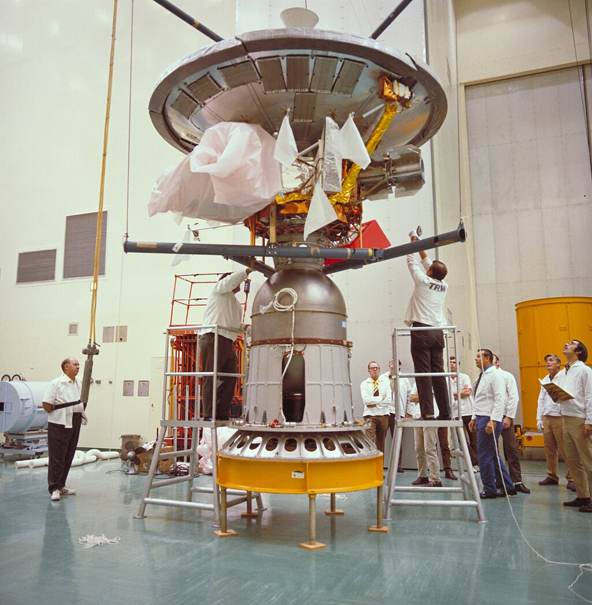

La Corsa allo Spazio fu una competizione tra gli Stati Uniti d'America e l'Unione Sovietica durante la Guerra Fredda (1947-1991)
per dimostrare la loro supremazia tecnologica, scientifica e militare nello spazio.
Questa competizione portó a una serie di traguardi significativi nell'esplorazione spaziale e nei viaggi spaziali.
Ecco una panoramica della Corsa allo Spazio:
| NOME | NAZZIONE | INVEZIONE | IMMAGINE | ANNO | |
| 1 | SONDA | USA | PIONNER 3 |  | 1958-60 |
| 2 | ANIMALI | USSR | LAIKA | |
1957 |
| 3 | RAZZI | USSR | SPUTNIK | |
1957 |
| 4 | STAZIONI | USSR | SALYUT | |
1971 |
| 5 | MISSIONE | USA | APOLLO 11 | |
1969 |